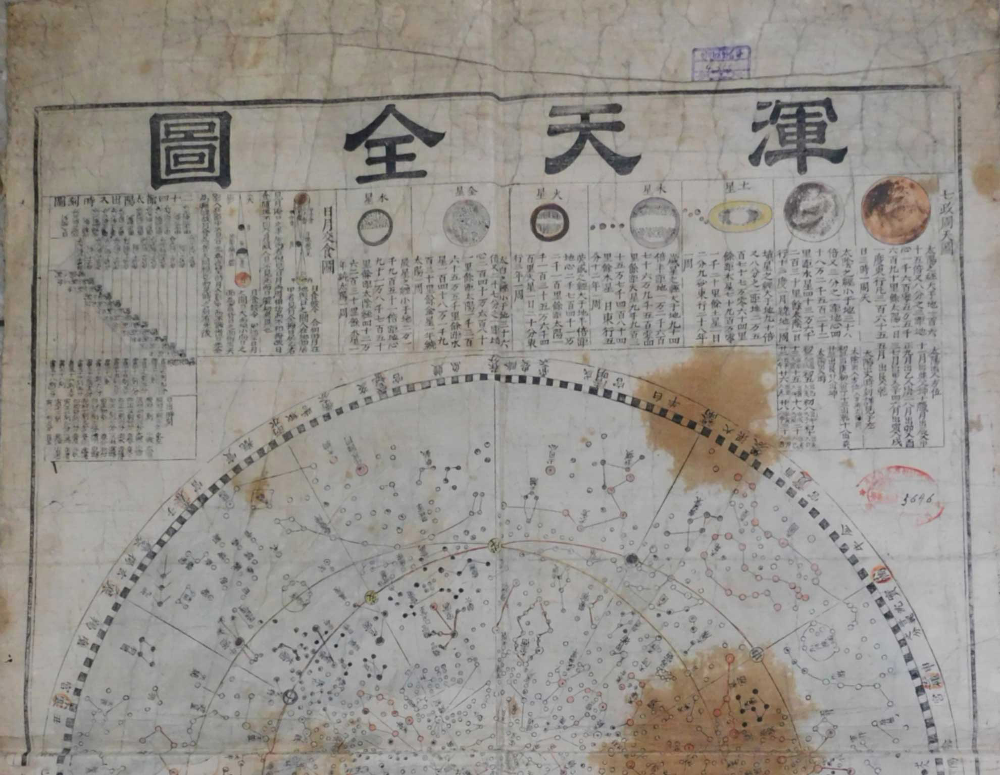

Grand People's Study House Homepage - 《NamSan》


A Workshop held on the occasion of 2024 “World Audiovisual Heritage Day”
On 5th December, a workshop on the occasion of 2024 “World Audiovisual Heritage Day” was held in the Grand People’s Study House.

UNESCO Memory of the World - “Honchonjondo”
Nov 1, 2023
Following the inscription of our national classic “Muyedobothongji” on the UNESCO Memory on Oct 30, 2017, the astronomical chart “Honchonjondo” was inscribed on the UNESCO Memory of the World International Register on May 24, 2023.
National Books Exhibition Opens at the Grand People’s Study House.
Sep 11, 2023
The opening ceremony of the National Books Exhibition took place on Sep. 7 at the Grand People’s Study House in celebration of the 75th founding anniversary of the DPRK.
Working people making research in the science in the Grand People’s Study House
Aug 6, 2023
Many working people make research in the science in the Grand People’s Study House-immense edifice for giving all the people education.

Officials and employees of GPSH making strenuous efforts for the improvement of the quality of the tele-reeducation
Feb 19, 2023
The officials and employees of GPSH make strenuous efforts for the improvement of the quality of the tele-reeducation for the scientists and technicians.
Pak Un, a Talented Poet of the 15th Century
Pak Un, a Talented Poet of the 15th Century
Born into an aristocratic family, Pak Un, who was exceptionally intelligent and had a talent for writing from his childhood, was highly regarded by many literary writers of future generations for his truthful reflection of the social reality of the period and his creation of excellent poems in terms of ideology and artistic value.
In the year when he was 17, Pak Un passed the state examination and started his career as an official. He always spoke the truth in his life and had a strong character.
Due to this strong character and stand, he was even sent into prison by the morale of the conservative group including Rue Ja Gwang who had been in power with Lord Yon San.
With a desire to put the world right, Pak Un was appointed to Jijegyo (official rank), but next year, after the purge of Confucian scholars in Gapza year (the Year of the Rat), he met with a calamity and was exiled. He was imprisoned again in less than 100 days and was executed at a young age.
His political stand and strong humanity can be clearly known from the fact that he had never changed his face even before his death and only smiled looking up the sky.
Pak Un, a talented poet, didn’t have a long time in his creative activities, but his name was handed down to posterity for his outstanding creative talent.
His literature "Upchuihonyugo" is being handed down.
Kim Hong Do, a Painter of the 18th Century, and His Painting Ssirum
Kim Hong Do, a Painter of the 18th Century, and His Painting Ssirum
Kim Hong Do, one of the realist painters of the 18th century, decorated the artists' world with a large number of masterpieces, including figure paintings, landscape paintings, flower-tree and bird paintings and other kinds of paintings.
He painted the working people as the masters of his work and actively sustained various techniques, thus showing their creative labor, optimistic lives and the beauty of the simple and sound mental world, and depicting the irrational social reality of the period.
Kim Hong Do’s creative activities can be divided into two stages: the first period of his life, which was until 1795 when he had learnt how to paint and lived in painters. The pictures of this period are characterized by unique screen composition and stroke of the brush, distinct individuality and profound creative attitude.
The painting Ssirum is a realistic work of peculiar realism in the form of a stroke painted by Kim Hong Do in the early period of his creative activities.
The painting shows well the people enjoying the folk holiday doing Ssirum because of the high level of representation with two wrestlers in the center and concentrating the inner world and character of spectators and their eyes in the most exciting moment of Ssirum.
The painting is a work loved by the people because it is based on the principles of comprehension and concentration of Korean painting, such as drawing, color drawing and shading, and the arrangement of characters in a circular structure.
Traditional Medicine Developed in the Period of Koguryo
Traditional Medicine Developed in the Period of Koguryo
From olden times, our nation has invented efficacious medicines, acupuncture, cupping, massage, fumigation, steaming, climate therapy and other unique folk remedies, so as to apply them to the treatment of diseases, prevention and promotion of health care. Through this course, traditional medicine of our own style suited to the physical characteristics and lifestyle of our nation has been created and steadily developed.
In the period of Koguryo, acupuncture therapy was developed in particular.
The development of acupuncture in Koguryo is due to the fact that it succeeded in the treatment of Ancient Joson, the earliest in the world, and it was possible to produce various types of metal needles using metal-processing technology of high level.
In the period of Koguryo, acupuncture and pharmacological therapy were developed in a high level.
The world’s first discovery of hemp made use of it for treatment and prevention of diseases and its knowledge spread to neighboring countries. In Koguryo, people also explored and used various efficacious medicines.
What is noteworthy in the pharmacotherapy of Koguryo is the use of metal pharmaceuticals.
In Koguryo gold was used as medicine, which shows that the pharmaceutical techniques and knowledge related to medicine were in a high level.
Precious Cultural Heritage - Koryo Paper
Precious Cultural Heritage – Koryo Paper
For paper production in Koryo, the main raw material was planted in many localities, which was related to the characteristics of the paper mulberry.
Unlike other trees, the cellulose content of the paper mulberry is 66%, cellulose is 17-18 mm long, which is useful for paper production, and it now produces high-quality paper, including printing paper, copying paper, wrapping paper, and fabric, cords, sacks, mats, etc.
The paper was produced by the following production processes with paper materials like paper mulberry.
First, the tree was cut in winter, steamed in an oven, peeled and dried, which was called black bark.
The black bark was soaked in water for a day, then the bark was peeled and dried in the sun.
This is the white bark, which is again washed out of the ash and once more bleached in the bleach.
Then, the faded white fiber was tapped with wood web into a frame and mixed with herb to make a paper raw solution.
The paper-based raw material was spread evenly on a wooden frame with a large plate, and the main process of paper production was completed, when the thickness and quality of the paper were determined by how well the raw material was spread evenly on the frame.
Finally, the dried paper was trimmed and smoothly machined to complete the paper manufacturing.
Koryo made various kinds of paper by combining different kinds of raw materials with other methods.
How to Delay Aging
How to Delay Aging
• Rich and sweet foods should be eaten properly. Diets containing vitamins and inorganic nutrients should be selected and rich and sweet foods should be eaten properly.
• Go for a walk regularly. A gentle walk facilitates blood circulation, relieves tension and increases muscle function. To relax the body’s tension, you must do several appropriate exercises.
•Use your brain regularly. Learning foreign languages, solving numbers, etc. improve your brain function.
• Lower cholesterol. It is advisable to eat less fat and eat plenty of fruit, vegetables, fish, and fiber-containing soybean and oats.
• Follow the stretching several times in the morning and evening for about 5 minutes.
• Stop smoking. A high dose of tobacco causes heart and lung failures and a lot of wrinkles on the skin.
• A fat person should lose weight. If the person exceeds 20% of the ideal weight, diet should be controlled.
Eggs for Disease Treatment
Eggs for Disease Treatment
In severe gastric and bowel cramps, dissolve fresh egg white in a glass of boiled, cooled water and drink.
Egg whites are used to reduce the acidity of the stomach quickly and safely.
In the case of dyspepsia, it is preferable to eat slightly salted egg white.
For headaches, including migraines, a good mixture of eggs and hot milk is effective if you drink daily.
The neuralgia is divided into half a well-boiled egg and attached to the most painful area.
For retarded children, two or three cups of hot milk are used to dissolve fresh eggs and feed them three or four times a day.
The burn site is often painted with well-resolved egg white and yolk.